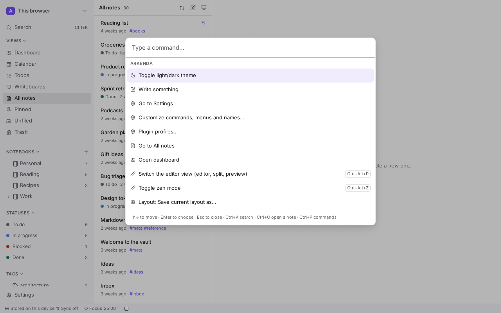
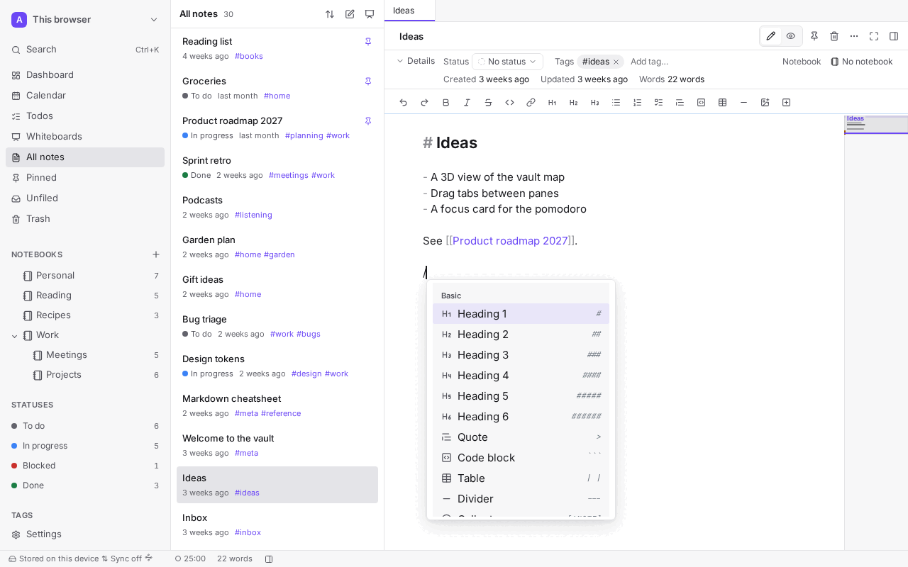
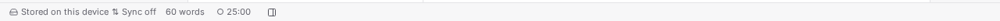
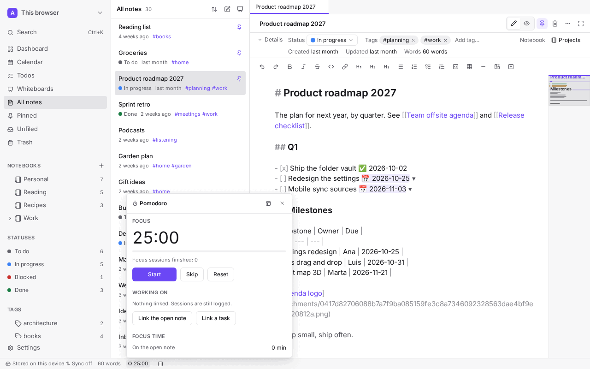
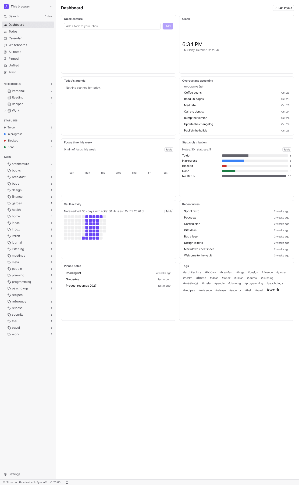
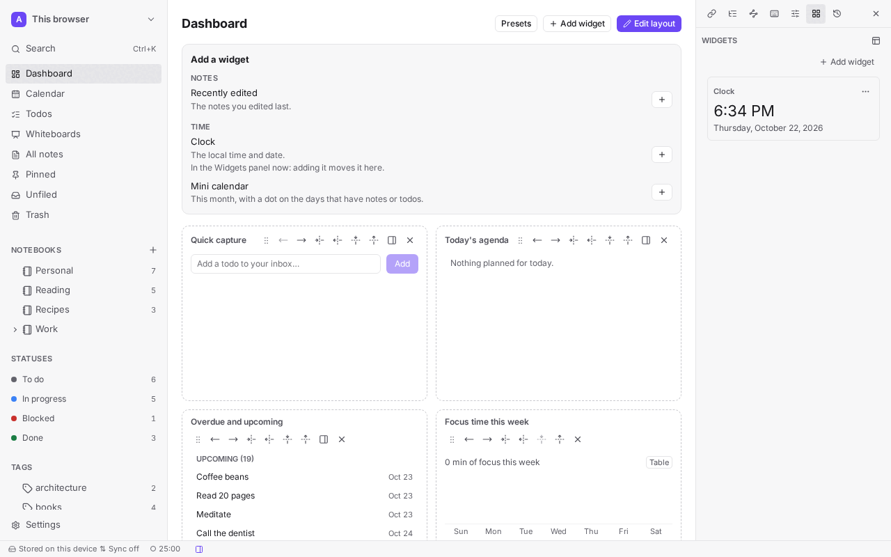
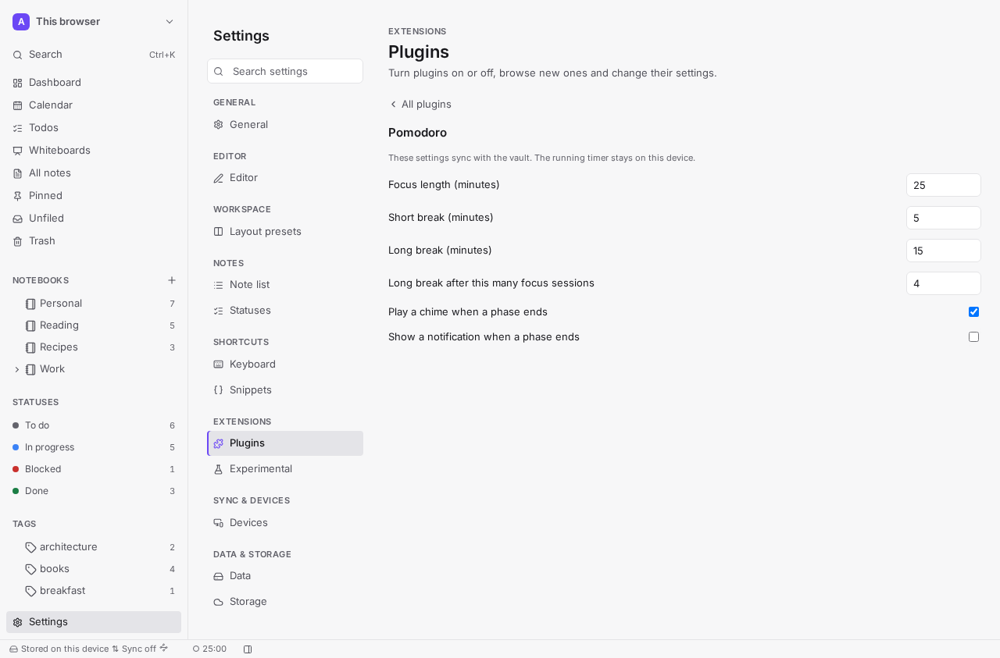

Surfaces
Where a plugin can show, and when to use each place. Declare every item in contributes first:
the app shows titles from there before any code runs, and refuses an undeclared id (not-declared).
| Contribution kind | Shows as | Call | Permission |
|---|---|---|---|
commands |
A command in the palette, with an optional default hotkey | commands.register |
commands |
insertItems |
A block in every insert menu of the editor | editor.registerInsertItem |
editor |
toolbarItems |
A button on the editor toolbar | editor.registerToolbarItem |
editor |
sidebarPanels |
A tool: a sidebar panel, or a chip in the status bar | views.registerSidebarPanel |
ui:panels |
dashboardWidgets |
A widget on the dashboard or in the Widgets panel | dashboard.registerWidget |
ui:widgets |
settingsTabs |
A tab of its own in its settings page | settings.registerTab |
ui:panels |
markdownFeatures |
A fenced code block language it renders | markdown.registerCodeBlock |
markdown |
themes |
A theme in the app's theme picker | appearance.registerTheme |
ui:themes |
syncSources |
A sync source in Settings ▸ Sync & devices (syncing category, API 1.1) |
sync.registerSource |
sync |
Users can rename your commands, toolbar buttons, panels and widgets, and hide or reorder commands (Settings ▸ Customize). They find them by id, so keep ids stable across versions, and never rely on your own title being shown.
Commands
Use a command for anything a person may want from the keyboard. Its title and default hotkey come
from contributes.commands; the hotkey (Mod-Shift-k) is shown for approval when the plugin is
reviewed and bound only when free (the app's and the user's keys win; reserved keys never bind).

Insert items and toolbar items
Use an insert item for a block people add while writing; a toolbar item for a frequent action on the editor toolbar. Both are data, checked when registered:
text: the Markdown it inserts, up to 4 KB;cursor: where the caret goes (its end by default).icon: one ofPLUGIN_EDITOR_ICONS; anything else is refused.- Insert items only:
group(one ofPLUGIN_INSERT_GROUPS,pluginsby default), up to 8keywordsthe menus' filter matches, and adetail(up to 120 characters) shown in the/menu. - A toolbar item either inserts
textor runs one of yourcommands.
await ctx.editor.registerInsertItem({
id: 'meeting', text: '## Meeting\n\n- ', icon: 'format-calendar', group: 'basic', keywords: ['agenda'],
});

Tools: sidebar panels and status chips
Use a panel for something people keep open next to their note. A panel is a tool, and a tool shows in one place at a time: the left sidebar, the right sidebar or the status bar. In the status bar it is a chip whose click opens the same view in a popover (a bottom sheet on phones).
places: distinct values amongleft,rightandstatus; both sidebars without it.defaultPlace: one ofplaces;left(else its first place) without it.icon: one ofPLUGIN_PANEL_ICONS, for its tab.
The person moves a tool among its places, from its menu or in Settings ▸ Workspace ▸ Panels and
status bar; their choice wins. On the desktop, a tool that allows status can also go to Arkenda's
title bar: a host place you never declare.
"sidebarPanels": [{ "id": "timer", "title": "Timer", "places": ["right", "status"], "defaultPlace": "status" }]


Widgets
Use a widget for a glanceable summary. It lives on the dashboard or in the Widgets panel (aside).
category: one ofnotes,tasks,time,focus,insights,other(the default); the pickers group widgets by it.places: distinct values amongdashboardandaside; the dashboard only without it.defaultPlace: one ofplaces;dashboard(else its first place) without it.defaultSizeandminSize({ w, h }) at registration.


Panels, widgets and settings tabs show a SandboxView: headings, text (muted or strong), lists,
links to notes and tags, and buttons that call your onAction. Limits are in
The sandbox.
{ blocks: [
{ kind: 'heading', text: 'Today' },
{ kind: 'text', text: '3 notes', tone: 'muted' },
{ kind: 'list', items: [{ kind: 'note', noteId: 'n1', label: 'Plan' }, { kind: 'tag', tag: 'work' }] },
{ kind: 'button', label: 'Refresh', action: 'refresh' },
] }
Settings tabs
Use the declarative settings first; add a tab only for something fields cannot express (a status, a list of results).

Markdown code blocks
markdown.registerCodeBlock({ id, render }) renders fenced blocks whose language is a declared
markdownFeatures id (```reading-time). render(source) returns HTML; the app sanitizes
it (no scripts, styles, frames, forms, event handlers or unsafe URLs) and hardens it like a note.
When rendering fails, the code block stays.
Themes
A theme is token values only (THEME_TOKENS: colours, quoted font stacks, radii, line heights),
with an optional dark set. Anything outside the token grammar, or text below 4.5:1 contrast on the
background, is refused. The theme extension kind will carry themes
without code; until it installs, a theme ships inside a plugin.
Sync sources
From API 1.1 (ctx.apiMinor >= 1), a plugin of the syncing category with the
sync permission can offer a way to sync a vault (a server, a service, a protocol).
Declare it in contributes.syncSources (its title is the name people see), then register it
(ctx.sync exists only when the manifest declares sync; the grant is checked at every call):
const source = await ctx.sync?.registerSource({
id: 'my-server',
needs: ['account'],
async onControl(action) {
if (action === 'start' || action === 'sync') await pushAndPull();
if (action === 'stop') cancelPass();
if (action === 'remove') await ctx.storage.delete('cursor');
},
});
await source?.setStatus({ state: 'idle', lastSyncAt: Date.now() });
- The user decides. People add the source per vault in Settings ▸ Sync & devices, see its status
and what it contacts, and pause or remove it there. The app calls
onControlwithstart(added, or the app started with it added),stop(paused or taken out),sync(one pass now: "Sync now", or the app opened or came back to the foreground) andremove(forget what you kept for that vault). - Nothing in the background on phones. Sync on
startandsynconly; keep no timers of your own. - No access of its own. A source reads and changes notes only through
notes(and the notebook or tag scope the user chose), and reaches only thenetwork.hoststhe user approved, which the app lists as what the source contacts. Registering a source grants nothing. - Revocation is immediate. While
syncis revoked, the app sends no control call and refusessetStatus; revokingnetworkornotes:*refuses those calls at once as usual. setStatustakesidle,syncingorerror, a line of at most 160 characters (detail) andlastSyncAt;pausedand "not available here" are the app's.
Not available to plugins yet
- Built-in plugins only: note actions, status bar items of their own, history providers, and CodeMirror or Marked extensions.
- No plugin API yet: sidebar views and map node kinds.